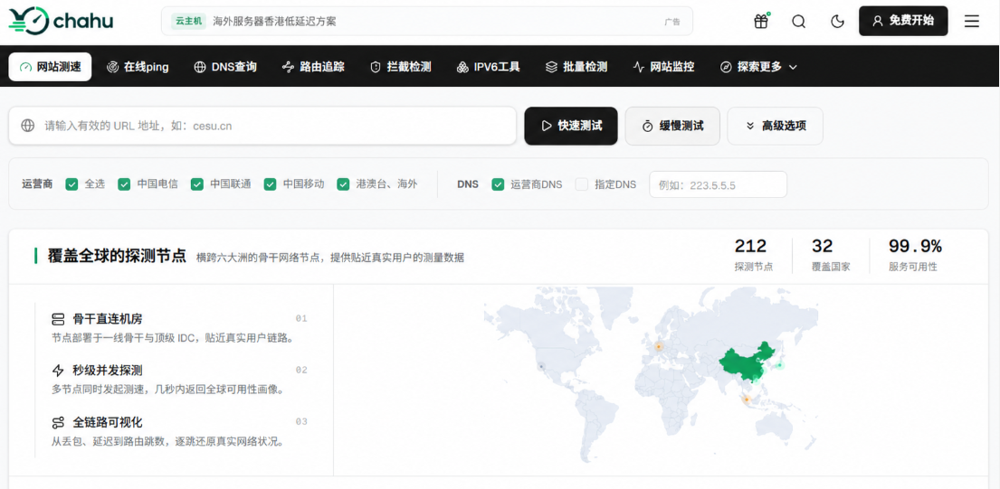
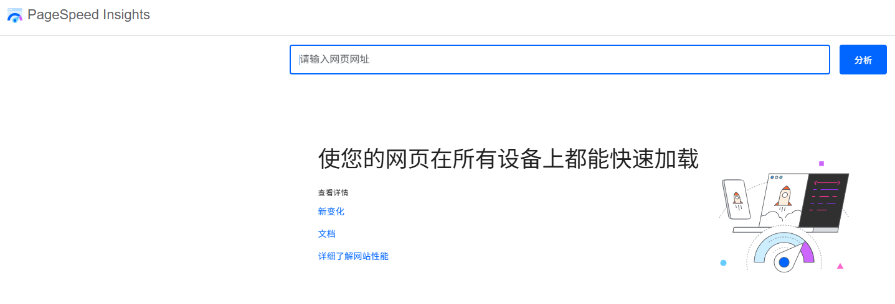
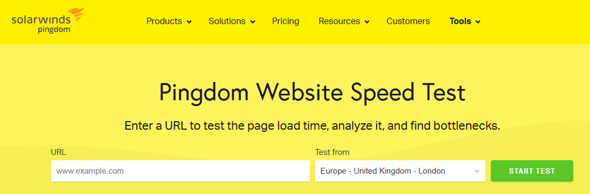
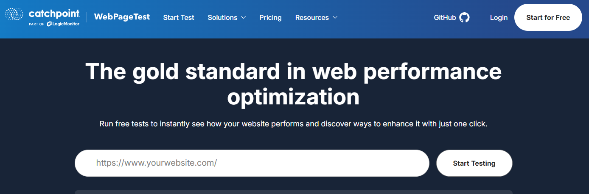

对于做跨境电商、外贸独立站或者海外内容站的站长和运维人员来说，网站加载速度直接决定了用户的留存率与订单转化率。根据行业经验，网页加载时间每增加 1 秒，跳出率就会上升几十个百分点。更重要的是，谷歌早就将 Core Web Vitals（核心网页指标） 纳为了搜索排名算法的重要权重。如果你的网站在海外打开卡顿，不仅跑失客人，SEO 排名也会跟着下滑。
但在优化之前，我们需要先摸清底细。想要准确掌握海外用户打开网站的实际速度，有哪些好用的测速工具？测试时应该看哪些数据？本文将为你深度拆解主流且实用的海外测速工具，并分享如何看懂测试报告、精准定位性能瓶颈。
一、 测速前必须搞懂的 4 个核心性能指标
很多刚接触海外建站的朋友，测速时往往只看“页面几秒完全加载完”。但实际上，“完全加载完”并不能完全代表用户的真实感受。在查看任何测速报告时，建议重点关注以下四个指标：
TTFB（Time to First Byte，首字节时间）： 从用户发起请求到浏览器收到服务器返回的第一字节数据的时间。这个指标主要反映服务器响应性能、DNS 解析速度以及物理距离带来的延迟。
FCP（First Contentful Paint，首次内容绘制）： 浏览器渲染出第一个文字或图片的时间。它告诉用户：“这个网站有反应了，正在加载。”
LCP（Largest Contentful Paint，最大内容渲染时间）： 页面上最大的主视觉块（通常是 Banner 大图或产品主图）渲染出来的时间。谷歌建议将 LCP 控制在 2.5 秒以内。
CLS（Cumulative Layout Shift，累计布局偏移）： 页面在加载过程中，元素有没有莫名其妙跳动（比如按钮突然下移导致误触）。这直接影响用户的视觉体验。
谷歌 Core Web Vitals 合格标准参考表
评估指标 | 优秀（Good） | 需改进（Needs Improvement） | 差（Poor） | 影响的关键因素 |
TTFB | < 0.8秒 (800ms) | 0.8秒 - 1.8秒 | > 1.8秒 | 服务器配置、数据库查询、未开启缓存 |
LCP | < 2.5秒 | 2.5秒 - 4.0秒 | > 4.0秒 | 图片过大、未用 WebP、第三方渲染阻塞 |
CLS | < 0.1 | 0.1 - 0.25 | > 0.25 | 未预设图片宽高尺寸、动态插入广告块 |
二、 5 款主流海外网站测速工具深度测评
1. chahu (茶壶测速)
对于国内的外贸运维团队、跨境电商运营以及海外独立站站长来说，很多纯国外测速工具由于国内访问网络环境的原因，偶尔会出现连接不稳定或报告生成缓慢的问题。此外，大部分国外工具缺少对“国内直连海外”或“亚太各区域节点”的针对性网络链路分析。这时候，chahu 就展现出了它的独特优势。
核心优势： chahu集成了丰富且分布广泛的检测节点，不仅覆盖国内各大运营商线路，还深入布局了全球主要的海外数据中心（如香港、新加坡、东京、硅谷、法兰克福等）。
实用功能： 它的中文界面极其直观，支持快速发起多节点 Ping 测试、HTTP 网页响应测试以及 MTR 路由追踪。你可以一眼看清海外服务器在不同国家和地区的访问延迟、丢包率，以及数据包是否存在跨国绕路现象。
适用场景： 非常适合国内外贸企业用来评估海外 VPS/主机的真实网络质量、测试 CDN 节点覆盖效果、评估线路稳定性，以及排查跨国网络连接中的链路瓶颈。

2. PageSpeed Insights
说到网站优化，自然少不了谷歌自家出品的 PageSpeed Insights (PSI)。
核心优势： PSI 的报告分为两大块：“实验室数据”（实时模拟加载）和“现场数据”（基于真实 Chrome 用户在过去28天内的访问体验数据，即 CrUX）。它能够分别对移动端和桌面端进行 0-100 的直观打分。
实用功能： 它会直接给出符合谷歌排名规则的诊断建议，比如“压缩未使用的 JavaScript”、“优化图片格式（推荐 WebP 或 AVIF）”、“消除阻塞渲染的资源”等，并明确列出每个项目能省下多少毫秒。
适用场景： 专门用来针对谷歌 SEO 规则做合规性诊断，是外贸站长日常做性能优化的“交卷测试器”。

3. GTmetrix
如果说 PSI 是给你打分的老师，那 GTmetrix 就是帮你排查哪块代码出问题的“手术刀”。很多站长改站时最常用的就是它。
核心优势： 它的核心价值在于那张 瀑布流图。网站加载时，哪个图片太大了、哪个 CSS 阻塞了渲染、哪个字体加载了 3 秒，在瀑布流里用时间轴拉开看得一清二楚。
进阶技巧： 注册个免费账号，测试时就能自己选测速节点（比如选硅谷、伦敦或者新加坡），还能模拟 4G 移动网或者宽带环境。
适合谁： 网站打开慢但不知道慢在哪、需要排查具体的第三方脚本（比如 GTM、Facebook Pixel 拖慢加载）或者大图问题的开发者。
4. Pingdom Website Speed Test
要是觉得 GTmetrix 那一堆图表和参数看着头疼，Pingdom 是个很顺手的替代品。
核心优势： 界面极其简单，把网址粘贴进去，下拉菜单选个测试地点（美洲、欧洲、亚太等），点一下几秒钟就出结果。
干货用法： 它的报告会把网页上的资源分类展示，比如图片占了百分之几、JS 脚本占了百分之几，还会标出哪些资源是从第三方域名拉取的。
适合谁： 适合用来做例行的日常巡检，或者你刚换了服务器、开启了 CDN，想花一分钟快速对比一下加速前后的效果。

5. WebPageTest
WebPageTest 原本是 AOL 搞出来的，后来开源被谷歌接手，很多做大厂运维和性能调优的极客最喜欢用它。
核心优势： 它的参数设定非常硬核，甚至允许你指定用真实的手机型号（比如 iPhone 13 或 Android 实机）和特定的网速限制来跑测试。
进阶技巧： 它支持连续跑好几次测试（First View 首次加载与 Repeat View 二次加载），能帮你排除偶然的网络波动。最绝的是它有个“视频录屏和断帧对比”功能，能把网站加载的过程像放电影一样逐帧拆开，让你看看用户第 0.5 秒看到什么、第 1 秒看到什么。
适合谁： 复杂的跨境电商大站、APP 内嵌 Web 页面，以及需要搞定各种老旧设备兼容性测试的专业技术团队。

三、 测速前容易踩的 3 个坑
不少站长在测试时经常疑惑：“为什么我跑两次出来的结果差了成倍？”或者“我自己打开明明很快，工具跑出来却一片红？”这大概率是踩了下面这几个坑：
源站防火墙把测速节点给封了： 如果你服务器装了宝塔防火墙、雷池 WAF，或者接了 Cloudflare 防护，测速工具在短时间内发起大量请求，很容易触发安全策略被当成 CC 攻击给限流甚至直接拦截了，测出来延迟自然高得离谱。
CDN 没预热（冷缓存状态）： 刚上线的站或者平时没什么流量的节点，CDN 边缘服务器上根本就没有你的文件缓存。测速工具第一次去测的时候，CDN 得跑回源站去拉资源，这叫“冷加载”。建议连续测 2-3 次，以后面命中缓存后的安定数据为准。
本地浏览器缓存骗了你的眼睛： 你自己在 Chrome 里输入网址觉得“秒开”，是因为你天天访问，图片和 CSS 早就在你电脑本地缓存好了。测速工具模拟的是新访客第一次无缓存访问的状态，这才是海外用户真实的打开速度。
四、 测出速度慢，该如何一步步排查？
拿到测速报告后先别慌，也别盲目去改配置文件或者删插件，顺着这个思路走：
[拿到了测速报告]
│
├──▶ 1. 看看 TTFB（首字节时间）是不是超过 1 秒了？
│ ├── 是 ──▶ 问题在后端！检查服务器配置低不低、距离目标用户是不是太远、有没有开启 Redis/Memcached 对象缓存。
│ └── 否 ──▶ 说明服务器响应没问题，继续往下排查前端。
│
├──▶ 2. 瞅瞅瀑布流，有没有单个资源加载超过 2 秒？
│ ├── 是 ──▶ 问题在文件体积！检查是不是传了几兆的无压缩原图，或者 JS/CSS 没做压缩合并。
│ └── 否 ──▶ 前端资源没大问题，继续往下看外部依赖。
│
└──▶ 3. 看看有没有某些域名一直卡在 Pending / Waiting 状态？
└── 是 ──▶ 问题在第三方脚本！引用的国外统计代码、客服聊天小插件、Google Fonts 字体在某些国家节点被堵住或者响应慢了，考虑加 defer 异步加载或者本地化。五、 总结与最佳工具组合建议
不同的测速工具侧重点各有不同，在实际运营和排查中，建议配合使用：
评估海外线路与 CDN 覆盖： 优先用 chahu查看全球多节点的响应时间与路由情况，排查是否有特定国家或地区访问延迟过高。
查 SEO 达标情况： 配合 PageSpeed Insights，确保 Core Web Vitals 指标符合谷歌要求。
排查资源与代码瓶颈： 用 GTmetrix 查看瀑布流，把大图和冗余代码清理掉。
复杂设备模拟与逐帧诊断： 用 WebPageTest 进行深度录屏分析。
网站测速并不是一次性的工作，而是一个持续优化的过程。根据工具返回的数据，持续对代码、图片压缩、缓存策略和 CDN 节点进行优化，才是提升海外访客体验和谷歌排名的根本所在。
相关问答
1. 问：有没有适合新手、不需要注册账号就能用的海外测速工具？
答：有的。chahu网页测速功能不需要注册，打开页面输入网址就能直接测，界面很清爽，适合新手快速查看页面加载时间和资源占比。另外，WebPageTest的公开版本也不需要登录，直接选择节点和浏览器就能跑测试，不过它的报告信息量比较大，新手可能会觉得有点复杂。
2. 问：GTmetrix和PageSpeed Insights都用什么区别，是不是选一个就行？
答：两者的定位不太一样。PageSpeed Insights更偏向"合规性体检"，它会把您的网站跑一遍谷歌的Lighthouse规则，然后告诉您哪里不达标、该怎么修，适合用来确保符合谷歌排名标准。GTmetrix则更像是"性能显微镜"，它的瀑布流图能逐项展示每个资源是怎么加载的、谁拖了后腿。我的建议是两个配合用：先用PSI看整体得分和优化建议，再用GTmetrix深入查具体哪个文件卡住了。
3. 问：用Chahu测海外服务器，主要看哪几个数据能判断线路好坏？
答：看三个数据就够了。一个是平均延迟，反映网络基础速度；第二个是丢包率，如果超过1%就说明线路不太稳定，跨国业务中丢包比延迟高更致命；第三个是路由跳数，如果某个方向的跳数明显多于其他地区，说明数据包绕路了，这种线路质量通常不会太好。如果这三项数据都正常，基本上可以判断网络层没问题，接下来就该往应用层查了。
4. 问：测速工具显示页面加载时间很长，但服务器负载很低，问题出在哪？
答：服务器负载低不等于响应快。这种情况通常有两种可能：一是页面本身太重了，比如未经压缩的图片、大量阻塞渲染的JS脚本、或者引用了加载缓慢的第三方字体库，这些跟服务器负载没关系；二是数据库查询虽然不耗CPU但执行慢，或者外部API接口响应慢，导致TTFB偏高。建议用WebPageTest或GTmetrix的瀑布流逐项查看，定位到具体是哪个资源的哪个阶段耗时最长，再针对性地处理。
5. 问：移动端测速和桌面端测速，哪个更重要？
答：现在海外电商和内容网站的移动端流量占比普遍超过60%，谷歌也是以移动端优先索引的。所以如果预算有限，优先保证移动端的测速和优化。测移动端时，不要只看桌面端的测试结果，因为移动设备的CPU、内存和网络环境（比如4G/5G）跟桌面完全不同。建议用PageSpeed Insights专门测移动端分数，并用WebPageTest选择真实的移动设备型号进行测试。
6. 问：定期测速时，一天中什么时间测最有参考价值？
答：建议在目标市场的晚间高峰时段测试，通常是当地时间晚上8点到11点。这个时间段家庭宽带用户最多，骨干网络和国际出口线路最容易出现拥堵，测出来的数据能反映最真实的"最差情况"。比如面向美国用户，就对应北京时间上午8点到11点测；面向欧洲用户，对应北京时间凌晨2点到5点测。只在工作时间测速，看到的往往是偏乐观的数据。